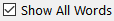
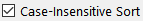

, or use the menu item or the keyboard shortcut - Alt+Q (Windows), Option+Q (Mac).
, or use the menu item or the keyboard shortcut - Alt+Q (Windows), Option+Q (Mac).— Checking and Correcting Spelling —
Sigil provides several ways to check your spelling – highlighting misspelled words, finding words one at a time, or showing all misspelled words at once. You can choose a standard dictionary to use, and create personal user dictionaries with your own words.
Spellcheck uses Code View to show misspelled words.
You can set the spell checking preferences that you want – including which main dictionary to use, and which personal user dictionaries to use if any. You can set up user dictionaries for different types of books or individual books, or use only the default user dictionary. You can change user dictionaries at any time.
Set up your dictionaries in Preferences.
Code View will highlight any misspelled words with a wavy red underline when automatic spell checking is enabled in Preferences or using the menu item :
You can then right-click on the misspelled word to bring up a list of choices:
Find the next misspelled word in Code View by selecting the menu item or using its shortcut. You will be switched to Code View automatically if you are not in it already, and the next misspelled word will be highlighted each time you search for the next word.
In order to be able to right-click on the misspelled word to select a suggested word or add it to the dictionary you must have enabled.
To open the Spellcheck dialog, click the Spellcheck toolbar icon , or use the menu item or the keyboard shortcut - Alt+Q (Windows), Option+Q (Mac).
Words are shown with the number of times they occur in the book and if they are misspelled. Select a word to perform an action.
Selecting a word will also show the first occurrence of the word in Code View so you can view its context and change just the one occurrence if needed.
Double-click a selected word to find the next occurrence of the word.
You can add words to a dictionary by clicking . Select your user dictionary to add the word to from the dropdown list:
To Ignore words, click . The Misspelled Word column will update to "No" only if you have enabled the dictionary to be used in Preferences. To clear all ignored words use . Ignored words are also cleared when you open a new book.
To correct the spelling of words, select one of the suggested words from the dropdown below click or type your own word in the box. Then click . This will change every occurrence of the selected word to the new word. It will also automatically refresh the list of words from the HTML files.
You can see all words in your EPUB by selecting . In addition, the tooltip for the column names shows the number of words in your EPUB:
If you enable  then the words will be sorted as AaBbCc instead of ABCabc.
Use the button if you edit your book while Spellcheck is open. You do not need to use it if you are just ignoring, adding, or changing a word.